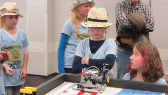
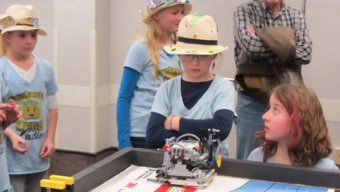

| Page 1 |
Achievement and Celebration
“ Winning is about
comparing oneself to
others. Achievement is
about comparing
oneself to one’s former
self.

By Rob Humfeld
The Fantastic LEGO Ladies
(Missouri, USA)

”

Coach’s Corner

The Fantastic LEGO Ladies formed in 2014 and in our first year were fortunate to compete in a
brand-new region filled with rookie teams. At our regional tournament, the team won the robot
game with a score of only 125 points and took the overall trophy. The team accepted an
invitation to the FLL Razorback invitational and it was there that we saw the huge gulf between
our robot performance and the performance of champion-level teams. (and we met the 2015
FLL Razorback Invitation Champions: Not the Droids You Are Looking For)
Achievement should not be defined by points.
“High achievement always takes place in the framework of high expectation” -- Charles Kettering
Coaches and parents have a lot to do with defining Achievement for the team. Our kids want to please us
and they look to our expectations to help define their perception of their own performance. In FLL our
natural temptation is to define achievement in terms of the robot game points. But the FLL Core Values
give us an opportunity to set different expectations.
The Droids have scored a lot of points and won a number of tournaments, but an argument could easily be
made that their greatest achievement has been the impact they’ve made on others through networking and
EV3Lessons.com. When preparing your team for the season or for a tournament think about what
expectations you can set for your kids outside of the points. Experimenting with new techniques, quality
documentation, networking with other teams, helping advise a rookie team, and many other goals can be
far more rewarding achievements.
Defining “Success” Independent of “Winning”. There have been plenty of tears when our robot has
failed to do “what it should have done”. Our second year, the team was pretty bummed when we didn’t win
our tournament. In fact, this year our robot performance was so bad we weren’t even eligible to place in the
overall awards. Still, in the robot game we had a very successful season.
Winning is about comparing oneself to others. Achievement is about comparing oneself to one’s former
self. This year’s season was successful because of the team’s technical growth. The team built a far better
chassis than last year – more compact, more robust. Our tools were far better designed and far more
sophisticated than the previous year. We tried sensors for the first time, used them extensively, and used
them effectively. We won the Robot Design trophy at our tournament and frankly I’m more proud of that
than anything we accomplished the previous year. This year’s robot really was a success even if it didn’t
score “enough” points.
Celebrating what we discovered. Each year we close the season with a retrospective review. We lead the
girls to talk about how they felt about their experience and performance during the season. We review the
scoring sheets from the tournament(s). We record aspirations for the following season, including
improvements we would like to make. There can be some hard conversations at times.
This year the coaches put the focus on celebrating what we discovered by preparing and reading to the kids
all of the robot techniques the team had discovered and used during the season – even little stuff that
wasn’t a “big deal” – and we celebrated a list that was 30 items long! Everyone was surprised, happy,
proud, energized, and inspired. Perhaps this year we should have a “Discovery Board” that we can
celebrate adding to throughout the year…hmm, gotta write that one down somewhere.
Why celebration is important. I am not arguing that your team should have an “everyone gets a
trophy” culture. I am saying that celebration helps us orient our attitude to focus on the achievements more
than the failures. It helps give us the confidence to carry on with hope. It gives us new energy to build new
aspirations and set more challenging expectations. Let’s be honest, it’s fun. And that’s my team’s favorite
Core Value.
“Optimism is the faith that leads to achievement. Nothing can be done without hope and confidence”
 
-- Helen Keller